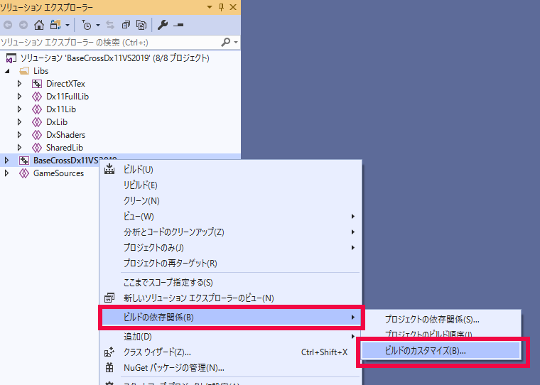
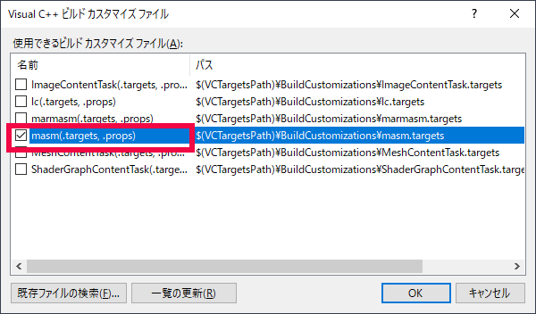
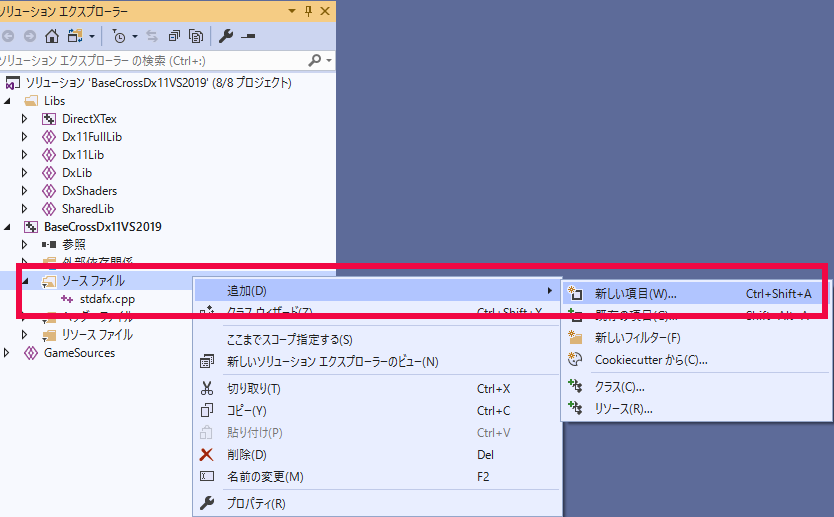
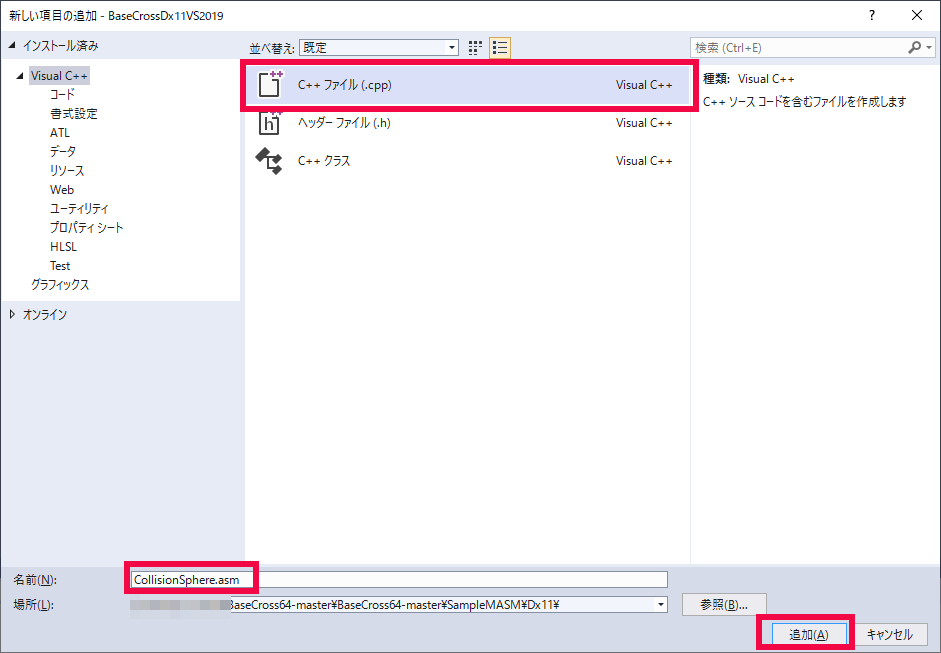
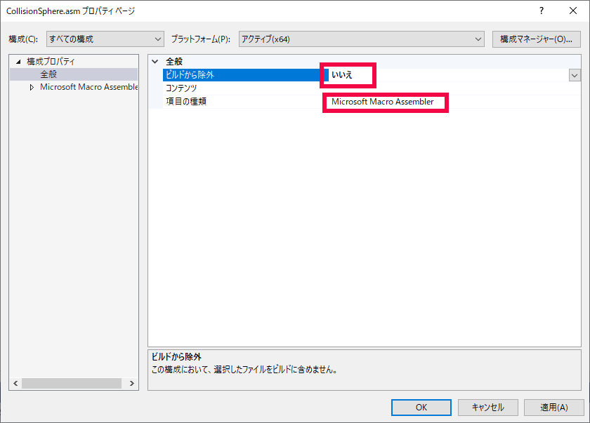
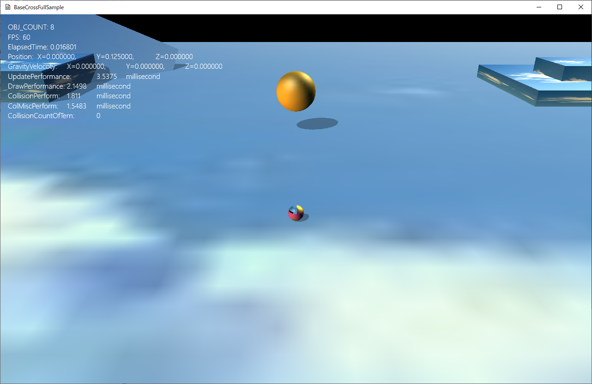

図0301a
でてきたダイアログでmasmをチェックしてOKします。

図0301b
続いて、もう一度BaseCrossDx11VS2019プロジェクトの中のソースファイルを右クリックし、追加－新しい項目を選択します。

図0301c
出てきた画面でCollisionSphere.asmを作成します。

図0301d
ここで注意したいのはアセンブリコードは必ずBaseCrossDx11VS2019プロジェクトの中のソースファイルに配置してください。他の参照プロジェクトに配置するとうまくいかない場合があります。

図0301e
CollisionSphere.asmを開き、以下のソースを記述します
.data
.code
;int CollisionSp(SPHERE* sp1, SPHERE* sp2)
;dword ptr [rcx] sp1.m_Center.x
;dword ptr [rcx+4] sp1.m_Center.y
;dword ptr [rcx+8] sp1.m_Center.z
;dword ptr [rcx+12] sp1.m_Radius
;dword ptr [rdx] sp2.m_Center.x
;dword ptr [rdx+4] sp2.m_Center.y
;dword ptr [rdx+8] sp2.m_Center.z
;dword ptr [rdx+12] sp2.m_Radius
CollisionSp proc
;m_Center同士の引き算
movss xmm4, dword ptr [rcx] ;sp1.m_Center.x
subss xmm4, dword ptr [rdx] ;sp2.m_Center.x
mulss xmm4, xmm4 ;x * x
movss xmm5, dword ptr [rcx+4] ;sp1.m_Center.y
subss xmm5, dword ptr [rdx+4] ;sp2.m_Center.y
mulss xmm5, xmm5 ;y * y
movss xmm6, dword ptr [rcx+8] ;sp1.m_Center.z
subss xmm6, dword ptr [rdx+8] ;sp2.m_Center.z
mulss xmm6, xmm6 ;z * z
;dot演算
addss xmm4, xmm5
addss xmm4, xmm6 ; xmm4 == dot
;半径同士の加算
movss xmm1, dword ptr [rcx+12] ;sp1.m_Radius
addss xmm1, dword ptr [rdx+12] ;sp2.m_Radius
;加算結果の2乗
mulss xmm1, xmm1
;半径加算2乗がdot演算結果より大きければ衝突
comiss xmm4, xmm1
JBE truelabel
mov eax, 0
ret
truelabel:
mov eax, 1
ret
CollisionSp endp
end
extern "C" int CollisionSp(SPHERE* sp1, SPHERE* sp2);

図0301f
ここでコントローラでプレイヤーを動かしAボタンでジャンプさせて、正面の球に当たると、球が消滅します。Xボタンで復帰します。
extern "C" int CollisionSp(SPHERE* sp1, SPHERE* sp2);
//操作
void HitTestSphere::OnUpdate() {
SPHERE sp1;
sp1.m_Center = m_Position;
sp1.m_Radius = m_Scale / 2;
auto ptrPlayer = GetStage()->GetSharedGameObject<Player>(L"Player");
auto sp2 = ptrPlayer->GetComponent<CollisionSphere>()->GetSphere();
if (CollisionSp(&sp1, &sp2)) {
SetUpdateActive(false);
SetDrawActive(false);
auto ptrShadow = AddComponent<Shadowmap>();
ptrShadow->SetDrawActive(false);
}
}
extern "C" int CollisionSp(SPHERE* sp1, SPHERE* sp2);